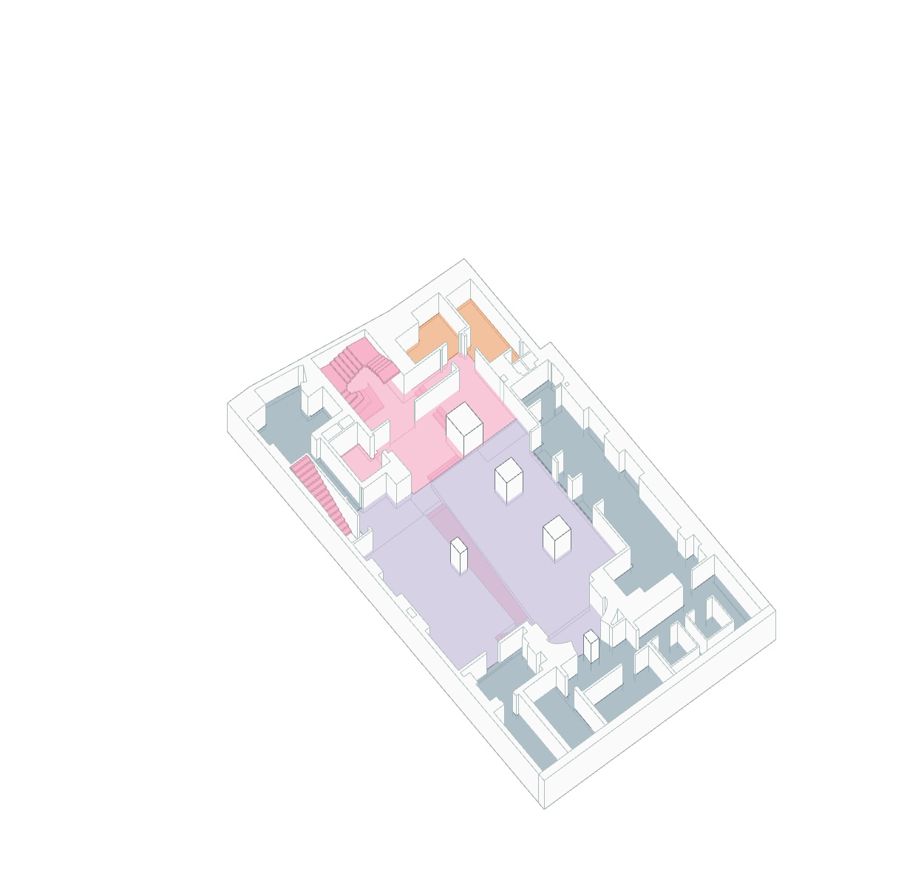

Projects
Farber House
Program analysis and axonometric studies for the Farber House renovation. Spanning basement cafeteria through six levels to roof, the building organizes circulation, public facilities, administrative offices, classrooms, and artistic spaces with each program type color-coded across the full building stack.

Program Analysis

Program analysis — cellar cafeteria through roof: classrooms (yellow), circulation (pink), public facility (blue), admin office (blue-grey), artistic classrooms (red), bathroom (orange).
Axonometric Studies

Ground floor — main space (lavender), circulation (pink), and service zones (blue-grey).

Upper floor — artistic classroom (red), circulation (pink), and classroom spaces (yellow).
Return to Projects